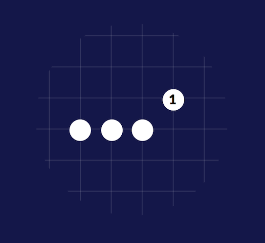

Les libertés d’une pierre sont les intersections libres adjacentes à cette pierre. Si une pierre adverse occupe l’une de ses intersections adjacentes, elle ôte à la pierre une liberté.
Ci-contre, la pierre A a deux libertés. La pierre B en a trois et la pierre C en a quatre. Après Blanc 1, la pierre D n’a plus que trois libertés.
Quand on occupe la dernière liberté d’une pierre, celle-ci est prise et retirée du Goban. On ne trouvera donc jamais sur le Goban de pierre ne disposant d’aucune liberté. Les pierres prises sont appelées prisonniers.
Les libertés d’une pierre sont les intersections libres adjacentes à cette pierre. Si une pierre adverse occupe l’une de ses intersections adjacentes, elle ôte à la pierre une liberté.
Ci-contre, la pierre A a deux libertés. La pierre B en a trois et la pierre C en a quatre. Après Blanc 1, la pierre D n’a plus que trois libertés.
Quand on occupe la dernière liberté d’une pierre, celle-ci est prise et retirée du Goban. On ne trouvera donc jamais sur le Goban de pierre ne disposant d’aucune liberté. Les pierres prises sont appelées prisonniers.
Ci-contre, si Orange joue sur la dernière liberté de Blanc, il prend la pierre.
Si une pierre de même couleur occupe une des libertés d’une pierre, les deux pierres sont connectées et forment une chaîne. Le nombre de libertés de la chaîne est le total des intersections adjacentes libres.
Ci-contre, les deux pierres Orange forment une chaîne qui a 6 libertés. La chaîne formée par les quatre pierres blanches possède neuf libertés.
Si une pierre de même couleur occupe une des libertés d’une pierre, les deux pierres sont connectées et forment une chaîne. Le nombre de libertés de la chaîne est le total des intersections adjacentes libres.
Ci-contre, les deux pierres Orange forment une chaîne qui a 6 libertés. La chaîne formée par les quatre pierres blanches possède neuf libertés.
Notez bien que deux intersections en diagonale ne sont pas adjacentes !
Ici, la pierre 1 n'est pas connectée à la chaîne de trois pierres.
Les pierres d’une chaîne sont solidaires : elles ne peuvent être prises séparément. Quand on occupe la dernière liberté d’une pierre ou d’une chaîne de pierres, celle-ci est prise et retirée du Goban. Toute chaîne ou toute pierre ne disposant plus que d’une seule liberté est menacée de prise en un seul coup : on dit qu’elle est en « atari ».
Ici, si Blanc joue sur la dernière liberté de la chaîne, il prend les deux pierres Orange et les retire du Goban.